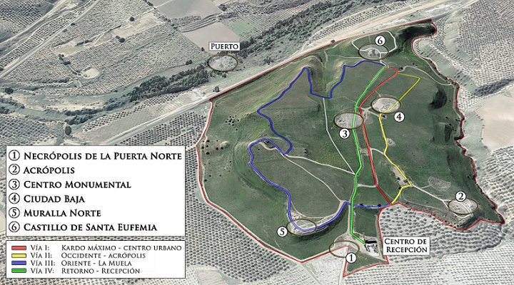
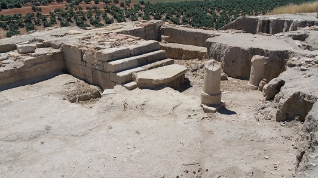
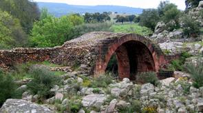

|
Cástulo - Linares
Ver: Vídeo

La Necrópolis de la Puerta Norte Antes de acceder a la ciudad se contempla una tumba ibérica y otra romana, fechadas en los siglos IV a.e.c. y V respectivamente. Es una de las necrópolis más importantes de Cástulo y estuvo en uso durante casi 1000 años, ocupando una superficie de más de 50.000 metros cuadrados. Acrópolis La Acrópolis se localiza en la meseta Oeste, un promontorio destacado
sobre la ciudad en torno al que se situaba el teatro, y en el que se
localizan las cisternas de agua que abastecían a las fuentes y edificios
públicos de Cástulo.

En el Centro Monumental de la ciudad encontramos los vestigios del
trazado urbano y grandes edificios públicos.
En esta zona de la ciudad se localizan unas termas mayores datadas en época Alto Imperial. Las excavaciones realizadas muestran el hypocaustum de las salas templadas y calientes, así como un pasillo subterráneo que da acceso a los hornos. También se observan varias piscinas, letrinas y conducciones de agua.
En esta zona las excavaciones arqueológicas han permitido documentar evidencias de la presencia de una comunidad judía localizada en el centro de la ciudad en torno a los siglos IV-V. Ciudad Baja Al suroeste del Centro Monumental, las excavaciones arqueológicas han documentado la existencia de dos edificios. Uno destinado al culto de Domiciano, según las hipótesis, y demolido como consecuencia de una damnatio memoriae a finales del siglo I, que alberga el mosaico de los Amores. Junto a él encontramos otro edificio posterior, datado en el siglo IV, y dedicado al culto cristiano. Aquí se conserva una pila bautismal por inmersión, y en una de sus habitaciones fue hallada la Patena de Cristo en Majestad, traída desde Roma y utilizada para la liturgia cristiana en Cástulo.
Sobre la meseta del Cerro de la Muela, en el extremo noreste de la ciudad, se localiza un lienzo de muralla de época romana, bajo la que existen murallas anteriores de época ibérica y edad del bronce. La muralla rodeaba completamente la meseta, protegiendo la ciudad con una longitud de más de 3,5 kilómetros. En este tramo de muralla existe un monumento construido en torno al siglo I a.e.c., donde se documentó una escultura de un gran león, conservado en el Museo Arqueológico de Linares.
En agosto de 2022, nuevos hallazgos
arqueológicos en el yacimiento de Cástulo. Se trata de una necrópolis y
de una infraestructura hidráulica.
 Ver Puentes Romanos
|
| MENÚ | CIUDADES HISPANIA | LA ESPAÑA ROMANA | TOPÓNIMOS |